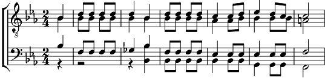

1. Il lorgne les étoiles, il guette la Grand-voile, l'infini glorieux.
Il peste sa campagne, au pays de Cocagne, il a perdu les cieux.
L'oiseau du Paradis est parti, semble-t-il, survoler d'autres terres.
Et lui d'errer toujours, il a perdu l'Amour au pays de Cythère.
Tant de moulin à vent, tant d'îles aux sirènes,
Du temple les marchands (en ont fait une arène
Où les fauves ennuyés jouent montrer les dents),
Et lui s'en est allé, et lui marche en chantant.
Partir toujours plus loin vers cet Eldorado qu'est l'Ailleurs,
Le meilleur, le plus grand, le plus beau.
Je ne sais s'il est vrai qu'Ailleurs est loin d'ici,
Mais si j'étais resté là, c'est moi que j'aurais fui.
2. Miséreux chercheur d'or, d'horizons, de trésors,
de tableaux et de rimes.
Priant pour qu'à jamais demeure insatisfait l'appétit qui l'anime.
Il poursuit ce Saint Graal d'extase et d'Idéal,
vagabond mis en route.
Enlaçant en chemin se foi qui tend la main lorsque perce le doute.
Contournant les tiédeurs, allant droit au brasier,
méprisant la fadeur des mets éparpillés, des parodies de joie,
il marche, il chante, il vit pour la première fois,
heureux simple d'esprit.
Partir toujours plus loin vers cet Eldorado qu'est l'Ailleurs,
le meilleur, le plus grand, le plus beau.
Je ne sais s'il est vrai qu'Ailleurs est loin d'ici,
mais si j'étais resté là, c'est moi que j'aurais fui.